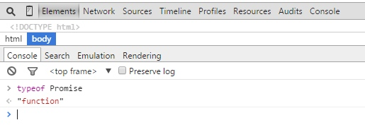

一直以来，JavaScript处理异步都是以callback的方式，在前端开发领域callback机制几乎深入人心。在设计API的时候，不管是浏览器厂商还是SDK开发商亦或是各种类库的作者，基本上都已经遵循着callback的套路。近几年随着JavaScript开发模式的逐渐成熟，CommonJS规范顺势而生，其中就包括提出了Promise规范，Promise完全改变了js异步编程的写法，让异步编程变得十分的易于理解。今天我们就来了解一下Promise。
一 、初识Promise
Promise可能大家都不陌生，因为Promise规范已经出来好一段时间了，同时Promise也已经纳入了ES6，而且高版本的chrome、firefox浏览器都已经原生实现了Promise，只不过和现如今流行的类Promise类库相比少些API。
1、什么是promise？
所谓Promise，字面上可以理解为“承诺”，就是说A调用B，B返回一个“承诺”给A，然后A就可以在写计划的时候这么写：当B返回结果给我的时候，A执行方案S1，反之如果B因为什么原因没有给到A想要的结果，那么A执行应急方案S2，这样一来，所有的潜在风险都在A的可控范围之内了。
Promise规范如下：
* 一个promise可能有三种状态：等待（pending）、已完成（fulfilled）、已拒绝（rejected）
* 一个promise的状态只可能从“等待”转到“完成”态或者“拒绝”态，不能逆向转换，同时“完成”态和“拒绝”态不能相互转换
* promise必须实现then方法（可以说，then就是promise的核心），而且then必须返回一个promise，同一个promise的then可以调用多次，并且回调的执行顺序跟它们被定义时的顺序一致
* then方法接受两个参数，第一个参数是成功时的回调，在promise由“等待”态转换到“完成”态时调用，另一个是失败时的回调，在promise由“等待”态转换到“拒绝”态时调用。同时，then可以接受另一个promise传入，也接受一个“类then”的对象或方法，即thenable对象。
2.promise原理分析
可以看到promise的规范并不是很多，下面我们一边分析promise一边自己写一个promise的实现。Promise实现的大致思路如下：
构造函数Promise接受一个函数resolver，可以理解为传入一个异步任务，resolver接受两个参数，一个是成功时的回调，一个是失败时的回调，这两参数和通过then传入的参数是对等的。
其次是then的实现，由于Promise要求then必须返回一个promise，所以在then调用的时候会新生成一个promise，挂在当前promise的_next上，同一个promise多次调用都只会返回之前生成的_next。
由于then方法接受的两个参数都是可选的，而且类型也没限制，可以是函数，也可以是一个具体的值，还可以是另一个promise。下面是then的具体实现：
Promise.prototype.then = function(resolve, reject) {
var next = this._next || (this._next = Promise());
var status = this.status;
var x;
if('pending' === status) {
isFn(resolve) && this._resolves.push(resolve);
isFn(reject) && this._rejects.push(reject);
return next;
}
if('resolved' === status) {
if(!isFn(resolve)) {
next.resolve(resolve);
} else {
try {
x = resolve(this.value);
resolveX(next, x);
} catch(e) {
this.reject(e);
}
}
return next;
}
if('rejected' === status) {
if(!isFn(reject)) {
next.reject(reject);
} else {
try {
x = reject(this.reason);
resolveX(next, x);
} catch(e) {
this.reject(e);
}
}
return next;
}
};
这里，then做了简化，其他promise类库的实现比这个要复杂得多，同时功能也更多，比如还有第三个参数——notify，表示promise当前的进度，这在设计文件上传等时很有用。对then的各种参数的处理是最复杂的部分，有兴趣的同学可以参看其他类Promise库的实现。
在then的基础上，应该还需要至少两个方法，分别是完成promise的状态从pending到resolved或rejected的转换，同时执行相应的回调队列，即resolve()和reject()方法。
到此，一个简单的promise就设计完成了，下面简单实现下两个promise化的函数：
function sleep(ms) {
return function(v) {
var p = Promise();
setTimeout(function() {
p.resolve(v);
});
return p;
};
};
function getImg(url) {
var p = Promise();
var img = new Image();
img.onload = function() {
p.resolve(this);
};
img.onerror = function(err) {
p.reject(err);
};
img.url = url;
return p;
};
由于Promise构造函数接受一个异步任务作为参数，所以getImg还可以这样调用：
function getImg(url) {
return Promise(function(resolve, reject) {
var img = new Image();
img.onload = function() {
resolve(this);
};
img.onerror = function(err) {
reject(err);
};
img.url = url;
});
};
接下来（见证奇迹的时刻），假设有一个BT的需求要这么实现：异步获取一个json配置，解析json数据拿到里边的图片，然后按顺序队列加载图片，每张图片加载时给个loading效果，
$('#list').find('> li:last-child').html('').append(img);
};
function prepend() {
$('<li>')
.html('loading...')
.appendTo($('#list'));
};
function run() {
$('#done').hide();
getData('map.json')
.then(function(data) {
$('h4').html(data.name);
return data.list.reduce(function(promise, item) {
return promise
.then(prepend)
.then(sleep(1000))
.then(function() {
return getImg(item.url);
})
.then(addImg);
}, Promise.resolve());
})
.then(sleep(300))
.then(function() {
$('#done').show();
});
};
$('#run').on('click', run);
这里的sleep只是为了看效果加的，可猛击查看demo！
在这里，Promise.resolve(v)静态方法只是简单返回一个以v为肯定结果的promise，v可不传入，也可以是一个函数或者是一个包含then方法的对象或函数（即thenable）。
类似的静态方法还有Promise.cast(promise)，生成一个以promise为肯定结果的promise；Promise.reject(reason)，生成一个以reason为否定结果的promise。
我们实际的使用场景可能很复杂，往往需要多个异步的任务穿插执行，并行或者串行同在。这时候，可以对Promise进行各种扩展，比如实现Promise.all()，接受promises队列并等待他们完成再继续，再比如Promise.any()，promises队列中有任何一个处于完成态时即触发下一步操作。
3.标准的Promise
可参考html5rocks的这篇文章JavaScript Promises，目前高级浏览器如Chrome、Firefox都已经内置了Promise对象，提供更多的操作接口，比如Promise.all()，支持传入一个promises数组，当所有promises都完成时执行then，还有就是更加友好强大的异常捕获，应对日常的异步编程，应该足够了。
现今流行的各大js库，几乎都不同程度的实现了Promise，如dojo，jQuery、Zepto、when.js、Q等，只是暴露出来的大都是Deferred对象,当然还有angularJs中的$q.这里以jQuery为例，说一下：
$('.box')
.animate({'opacity': 0}, 1000)
.promise()
.then(function() {
console.log('done');
});
// ajax
$.ajax(options).then(success, fail);
$.ajax(options).done(success).fail(fail);
// ajax queue
$.when($.ajax(options1), $.ajax(options2))
.then(function() {
console.log('all done.');
}, function() {
console.error('There something wrong.');
});
二 、用Promise组织你的JavaScript代码
上面我们了解了Promise，相信大家对Promise有了一定的认识。下面我们开始动手来写代码，通过几个简单的例子，来加深理解。这里我们使用浏览器自带的Promise，首先我们要先检测一些浏览器是否支持Promise，其实很简单，如果是谷歌浏览器，按下F12,打开控制台，如图：

这里我们可以看到Promise的type是function，也就是说谷歌浏览器是支持promise的。以此为原理，我们可以写一段JavaScript代码来检测，代码如下：
alert("支持Promise");
}
else{
alert("不支持Promise");
}
经过检测，发现IE11竟然不支持promise.建议大家用谷歌浏览器来进行测试吧。
我们首先来写一个等待的方法，如下：
return new Promise(function(resolve, reject) {
setTimeout(resolve,duration);
})
}
测试这个方法的代码如下：wait(5000).then(function(){alert(‘hello’)})，这段代码很简单，就是等待5秒以后执行一个回调，弹出一个消息。当然，你还可以这样写：
怎么样？很简单吧~~
下面来看一些我从网上收集的一些常用的JavaScript的promise的写法：
return http(uri, 'GET', null);
}
function post(uri,data){
if(typeof data === 'object' && !(data instanceof String || (FormData && data instanceof FormData))) {
var params = [];
for(var p in data) {
if(data[p] instanceof Array) {
for(var i = 0; i < data[p].length; i++) {
params.push(encodeURIComponent(p) + '[]=' + encodeURIComponent(data[p][i]));
}
} else {
params.push(encodeURIComponent(p) + '=' + encodeURIComponent(data[p]));
}
}
data = params.join('&');
}
return http(uri, 'POST', data || null, {
"Content-type":"application/x-www-form-urlencoded"
});
}
function http(uri,method,data,headers){
return new Promise(function(resolve, reject) {
var xhr = new XMLHttpRequest();
xhr.open(method,uri,true);
if(headers) {
for(var p in headers) {
xhr.setRequestHeader(p, headers[p]);
}
}
xhr.addEventListener('readystatechange',function(e){
if(xhr.readyState === 4) {
if(String(xhr.status).match(/^2\d\d$/)) {
resolve(xhr.responseText);
} else {
reject(xhr);
}
}
});
xhr.send(data);
})
}
function wait(duration){
return new Promise(function(resolve, reject) {
setTimeout(resolve,duration);
})
}
function waitFor(element,event,useCapture){
return new Promise(function(resolve, reject) {
element.addEventListener(event,function listener(event){
resolve(event)
this.removeEventListener(event, listener, useCapture);
},useCapture)
})
}
function loadImage(src) {
return new Promise(function(resolve, reject) {
var image = new Image;
image.addEventListener('load',function listener() {
resolve(image);
this.removeEventListener('load', listener, useCapture);
});
image.src = src;
image.addEventListener('error',reject);
})
}
function runScript(src) {
return new Promise(function(resolve, reject) {
var script = document.createElement('script');
script.src = src;
script.addEventListener('load',resolve);
script.addEventListener('error',reject);
(document.getElementsByTagName('head')[0] || document.body || document.documentElement).appendChild(script);
})
}
function domReady() {
return new Promise(function(resolve, reject) {
if(document.readyState === 'complete') {
resolve();
} else {
document.addEventListener('DOMContentLoaded',resolve);
}
})
}
看到了吧，Promise风格API跟回调风格的API不同，它的参数跟同步的API是一致的，但是它的返回值是个Promise对象，要想得到真正的结果，需要在then的回调里面拿到。
三、用Promise组织JavaScript异步代码
在比较复杂的页面中，我们会使用到大量的异步操作。我们来看看使用Promise会带来怎样的便利吧。
1、多个异步调用，同步/并行
例如我们页面调用了好几个异步函数，我们要等待所有的异步函数执行完成后，做一些操作，如弹出一个消息框提示用户操作成功。下面我们拿一个例子来说明一下：
Promise.all跟then的配合，可以视为调用部分参数为Promise提供的函数。譬如，我们现在有一个接受三个参数的函数：
console.log(a + b + c);
}
现在我们调用print函数，其中a和b是需要异步获取的：
print(geta(), getb(), 10); //这是同步的写法
Promise.all([geta(), getb(), 10]).then(print); //这是 primise 的异步写法
如果用callback的话，我们就只能一个一个调用了，调用完了geta,然后在其回调函数里面调用getb，最后在getb的回调函数中调用print方法。串行和并行哪个更快，大家很清楚吧~~
** 2.竞争**
如果说Primise.all是promise对象之间的“与”关系，那么Promise.race就是promise对象之间的“或”关系。比如，我要实现“点击按钮或者5秒钟之后执行”：
Promise.race(wait(5000), waitFor(btn, click)).then(function(){
console.log('run!')
})
3.异常处理
异常处理一直是回调的难题，而promise提供了非常方便的catch方法：在一次promise调用中，任何的环节发生reject，都可以在最终的catch中捕获到：
return loadImage(img1);
}).then(function(){
return loadImage(img2);
}).then(function(){
return loadImage(img3);
}).catch(function(err){
//错误处理
})
4.复杂流程
接下来，我们来看比较复杂的情况。
promise有一种非常重要的特性：then的参数，理论上应该是一个promise函数，而如果你传递的是普通函数，那么默认会把它当做已经resolve了的promise函数。
这样的特性让我们非常容易把promise风格的函数跟已有代码结合起来。
为了方便传参数，我们编写一个currying函数，这是函数式编程里面的基本特性，在这里跟promise非常搭，所以就实现一下：
var f = arguments[0];
var args = Array.prototype.slice.call(arguments,1);
return function(){
args.push.apply(args,arguments);
return f.apply(this,args);
}
}
currying会给某个函数"固化"几个参数，并且返回接受剩余参数的函数。比如之前的函数，可以这么玩：
print2(2, 3); //得到 11 + 2 + 3 的结果，16
var wait1s = currying(wait,1000);
wait1s().then(function(){
console.log('after 1s!');
})
有了currying，我们就可以愉快地来玩链式调用了，比如以下代码：
domReady().then(currying(wait,5000)),
waitFor(btn, click)])
.then(currying(runScript,'a.js'))
.then(function(){
console.log('loaded');
return Promise.resolve();
});
不管Promise实现怎么复杂，但是它的用法却很简单，组织的代码很清晰，从此不用再受callback的折磨了。promise作为一个新的API，它的API本身没有什么特别的功能，但是它背后代表的编程思路是很有价值的。
最后，Promise是如此的优雅！但Promise也只是解决了回调的深层嵌套的问题，真正简化JavaScript异步编程的还是Generator，在Node.js端，建议考虑Generator。
四 、参考资料
JavaScript Promise迷你书（中文版） http://liubin.github.io/promises-book/
JavaScript Promise启示录 http://www.csdn.net/article/2014-05-28/2819979-JavaScript-Promise
用Promise组织程序 http://www.w3ctech.com/topic/721